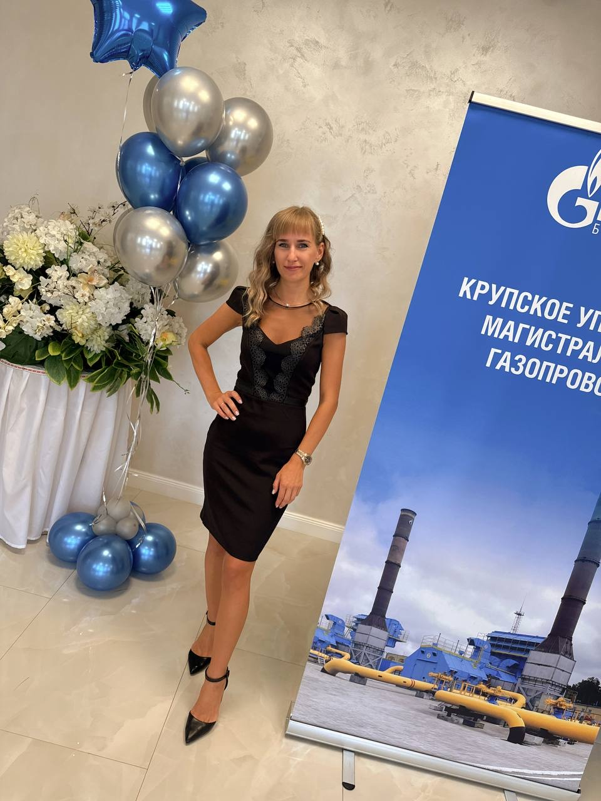

Попова Елена Владимировна
Бухгалтер

Образование
- В 2015 году закончила Белорусскую государственная сельскохозяйственную академию по специальности бухгалтерский учёт, анализ и аудит.
Опыт работы
- Работала бухгалтером в сельскохозяйственной организации, являлась секретарем наблюдательного совета и казначеем первичной профсоюзной организации.
- Свой трудовой путь в Газпроме начала в 2021 году с должности бухгалтера Крупского УМГ.
- Дополнительно нахожусь на должности секретаря БРСМ.
Личные качества
- Считаю себя ответственной, коммуникабельной, люблю узнавать новое, всегда стремлюсь заменить в отпуске своих коллег.
Следующая страница
На главную